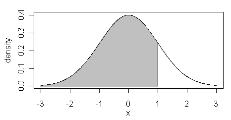
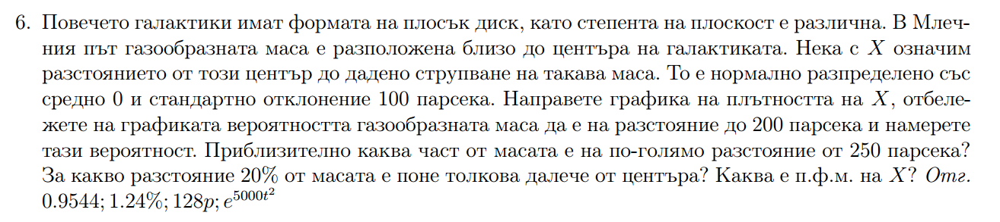

class: center, middle # Random data 2 --- # d, p, q функциите --- # d функцията <p>е функцията на плътността</p> <p>Отговаря на въпроса P(X = x) = ?</p> <p>Т.е. казва каква е вероятността за дадено x.</p> --- # p функцията <p>е функцията на разпределението</p> <p>Отговаря на въпроса P(X < x) = ?</p> <p>Т.е. смята лицето на графиката от -безкрайност до x.</p>  --- # q функцията <p>Отговаря на въпроса P(X < ?) = s</p> <p>Т.е. казва ни тръгвайки от -безкрайност в коя точка да спра да интегрирам, че да получа лице s.</p> --- # q функциите и p функциите имат keyword аргумент: lower.tail <p>lower.tail = TRUE смята от -безкрайност до x (сивата част)</p> <p>lower.tail = FALSE смята от x до +безкрайност (бялата част)</p> --- #Сега да си припомним разпределенията! --- # Стандартизиране $$ Z = \dfrac {X - \mu} {\sigma} $$ Когато имаме, че $$ X \sim N(\mu, \sigma^2) $$ и търсим $$ P(a < X < b) $$ За да ползваме таблиците от упражнения, първо трябва да стандартизираме - вадим средното, делим на стандартното отклонение (да е стандартно нормално) $$ P(\dfrac {a - \mu} {\sigma} < \dfrac {X - \mu} {\sigma} < \dfrac {b - \mu} {\sigma}) $$ $$ P(\dfrac {a - \mu} {\sigma} < Z < \dfrac {b - \mu} {\sigma}) $$ $$ P(a1 < Z < b1) = P(Z < b1) - P(Z < a1) $$ Намираме P(Z < b1) и P(Z < a1) с pnorm. --- # Задача от семинарно упражнение  --- ```r x = seq(from = -350, to = 350, by = 1) y = dnorm(x, mean = 0, sd = 100) plot(x, y, type = "l") ## P(-200 < x < 200) ## P(x < 200) - P(x <-200) ## P(z < 200/100) - P(z < -2) pnorm(2) - pnorm(-2) # или направо да ползваме умно R pnorm(200, 0, 100) - pnorm(-200, 0, 100) # искаме да разберем лицето на графиката за |x| > 250 2 * pnorm(250, 0, 100, lower.tail = FALSE) # искаме да разберем за коя точка лицето на графиката е 20% # т.е. по 10% от всяка страна qnorm(0.1, 0, 100) ``` --- # Т.е. R е мощен и няма нужда да стандартизираме Х. --- ## 1. Генеирайте 10 случайни числа от равномерно разпределение в [0, 10]. Намерете максимума и минимума на тези числа. --- ```r x = runif(10, min=0, max=10) min(x) max(x) ``` --- ## 2. Генерирайте 10 случайни числа от нормално разпределение със средно 5, стандартно отклонение 5. Колко от тези числа са по-малки от 0? --- ```r x = rnorm(10, mean=5, sd=5) sum(x < 0) ``` --- ## 3. Генерирайте 100 случайни числа със средно 100 и стандартно отклонение 10. Колко от тези числа са на 2 стандартни отклонения от средното? Т.е. да са по-малки от 80 и по-големи от 120. --- ```r m = 100 s = 10 x = rnorm(100, mean=m, sd=s) sum(x<m-2*s | x>m+2*s) ``` --- ## 4. Хвърлете монета 50 пъти, колко пъти имате тура? --- ```r n = 1 p = 0.5 x = rbinom(50, n, p) sum(x==1) ``` --- ## 5. Хвърлете зар 100 пъти. Колко 6ци имате? --- ```r x = sample(1:6, 100, replace=T) sum(x==6) # или x = rbinom(100, 1, 1/6) sum(x==1) ``` --- ## 6. Изберете 6 числа от 49 (тото). Кое е най-голямото, кое е най-малкото? --- ```r x = sample(1:49, 6, replace=F) min(x) max(x) ``` --- ## 7. За N(0, 1) намерете z в P(X <= z) = 0.05 --- ```r qnorm(0.05, 0, 1) ``` --- ## 8. За N(0, 1) намерете z в P(-z <= Z <= z) = 0.05 --- ```r negative_z = qnorm(0.95/2) z = -negative_z ``` --- ## 9. Колко е лицето надясно (вероятността) от 1.5 за N(0, 2)? --- ```r pnorm(1.5, 0, 2, lower.tail=F) ```